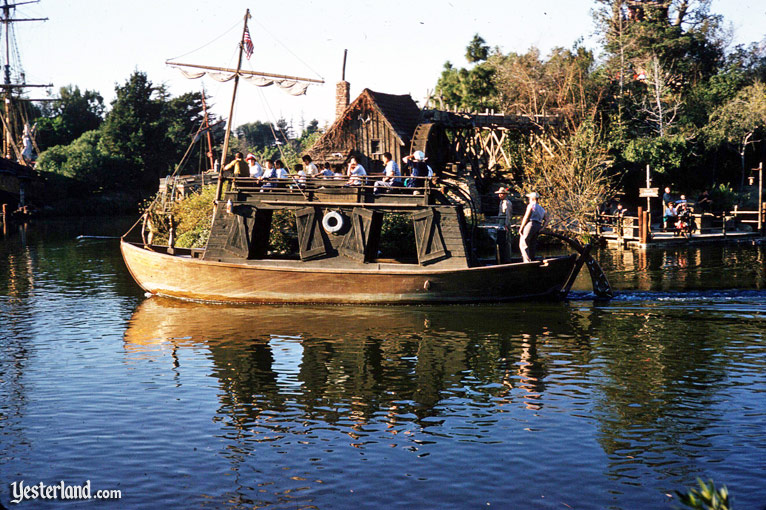
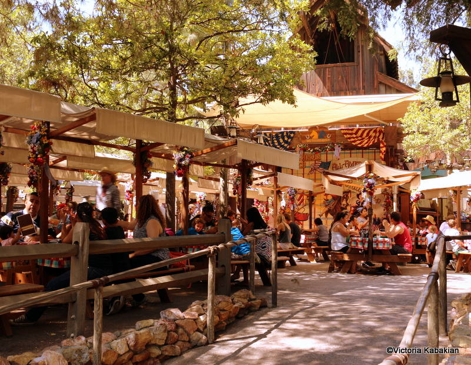

The PeopleMover, sometimes referred to as the Goodyear PeopleMover and WEDWay PeopleMover, was a transport attraction that opened on July 2, 1967. Guests boarded small trains that ran on elevated tracks for a "grand circle tour" above Tomorrowland. The term "people mover," now in wider use to describe many forms of automated public transport, was first coined as the name for this attraction. PeopleMover was originally only a working title, but became attached to the project over time.
The PeopleMover closed in August 1995 since Imagineers thought the ride was past its time and no longer a prototype, but rather a place to rest one's feet and also as part of Michael Eisner and Paul Pressler's program to save money by shutting down expensive and classic attractions. Also multiple people died on this ride which isn't great when it comes to the desirability of the ride.

Mine Train Through Nature's Wonderlandwas an expansion of the 1956 Rainbow Caverns Mine Train attraction and featured numerous wilderness environments and animatronic animals. Narrated by an old prospector, the train ride began in the mining town of Rainbow Ridge. It gives the viewer a tour of the land while featuring many different anamatronic animals
Mine Train Through Nature's Wonderland was closed in 1977 and replaced by Big Thunder Mountain Railroad, which opened in 1979, owing to the demand for thrill rides in the 1970's.
Many remnants of the attraction were left behind and several portions still exist today, such as the Bear Country pond (with the jumping fish still active) and train tunnel and various rock structures from the Living Desert can be seen at Big Thunder Ranch.
The Mike Fink Keel Boats were small boats that navigated the Rivers of America at Disneyland. The Mike Fink Keel Boats were based on two episodes of the Davy Crockett miniseries which aired on the Disneyland TV show in 1955. The boats were free-floating and traveled around Tom Sawyer Island Riders would sit on benches either inside the cabin or on the roof of the cabin.
The keelboats at Disneyland closed at the end of the summer on September 6, 1994 and remained closed for nearly a year and a half until coming back in early March 1996. The Magic Kingdom's keel boats ran continuously until they closed in April 2001.
One several occasions the boats capsized, leaving some with minor injuries. At one point, hull damage caused the boat to flood and sink, Disney left it there until and it was finally removed from public view in April 2009.